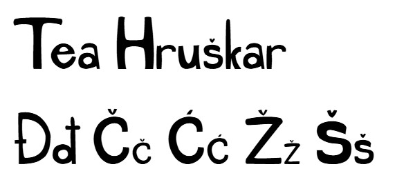
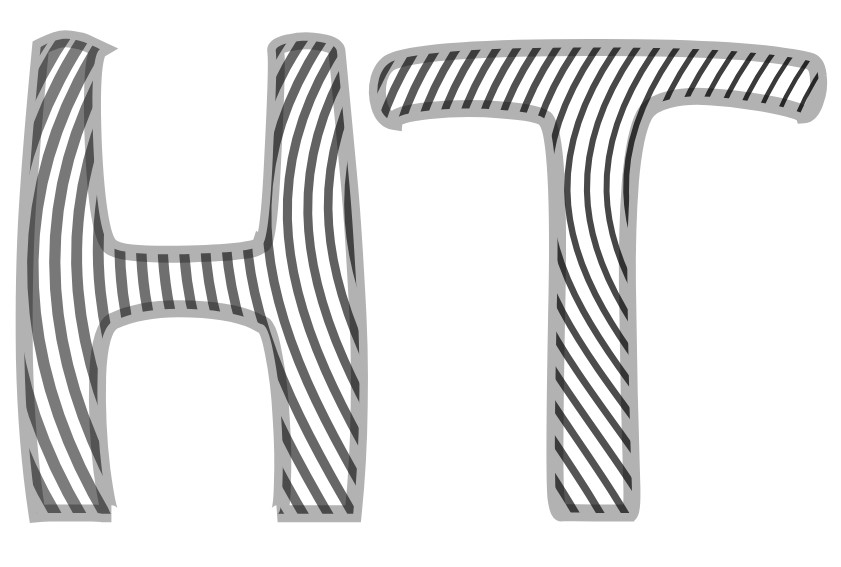
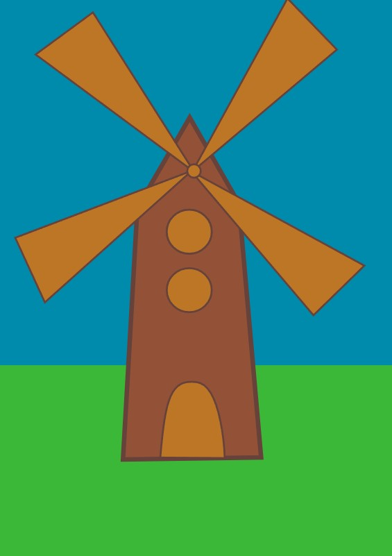
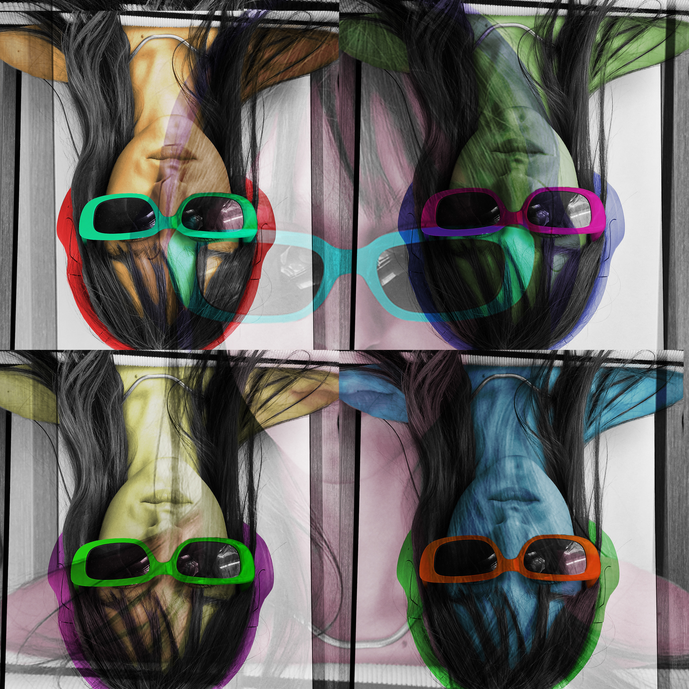

Vježbe
a) Vježbe vektorske grafike
Vježba 1- Moj font, ttf datoteka
Vježba 1- Moj font, pdf preview

Vježba 2- Bazierova krivulja

Vježba 3- Vjetrenjača

Vježba 4- Pehar
b) Vježbe piksel grafike
Vježba 5- Retuširanje
Vježba 6- Koloriranje

Vježba 7- Fotomontaža
c) Vježbe video/web
Vježba 8- Kinemagraf
Vježba 9- Video obrada
Vježba 10 i 11- Moja webstranica
Link na webstranicu
o meni
početna
video